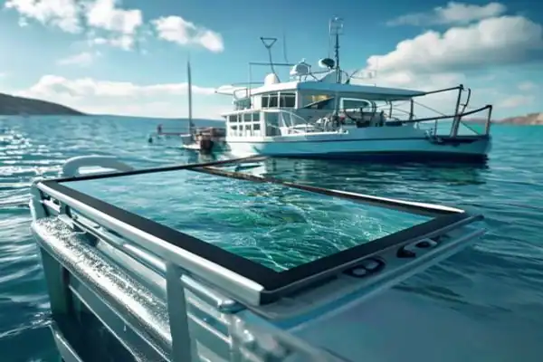
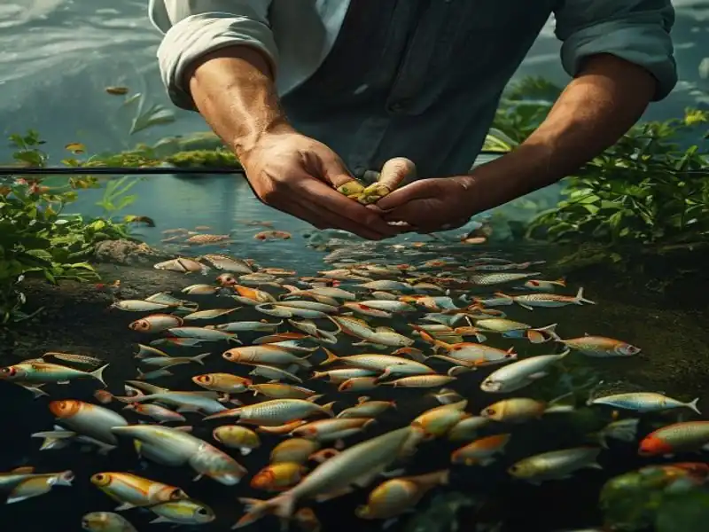
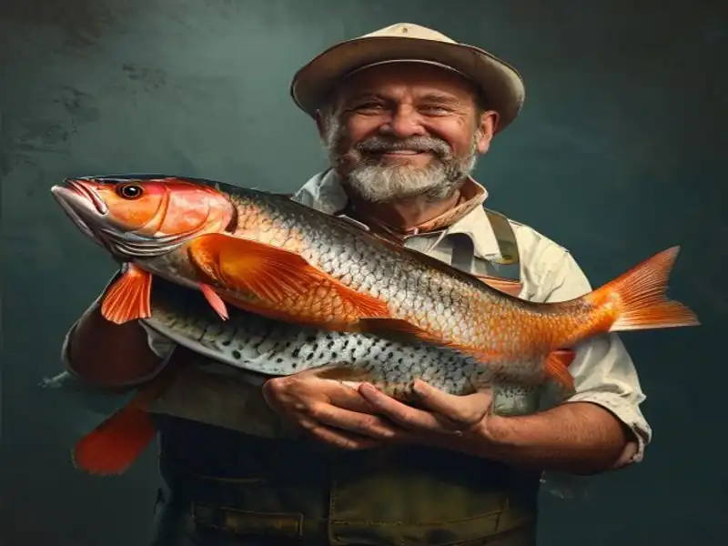
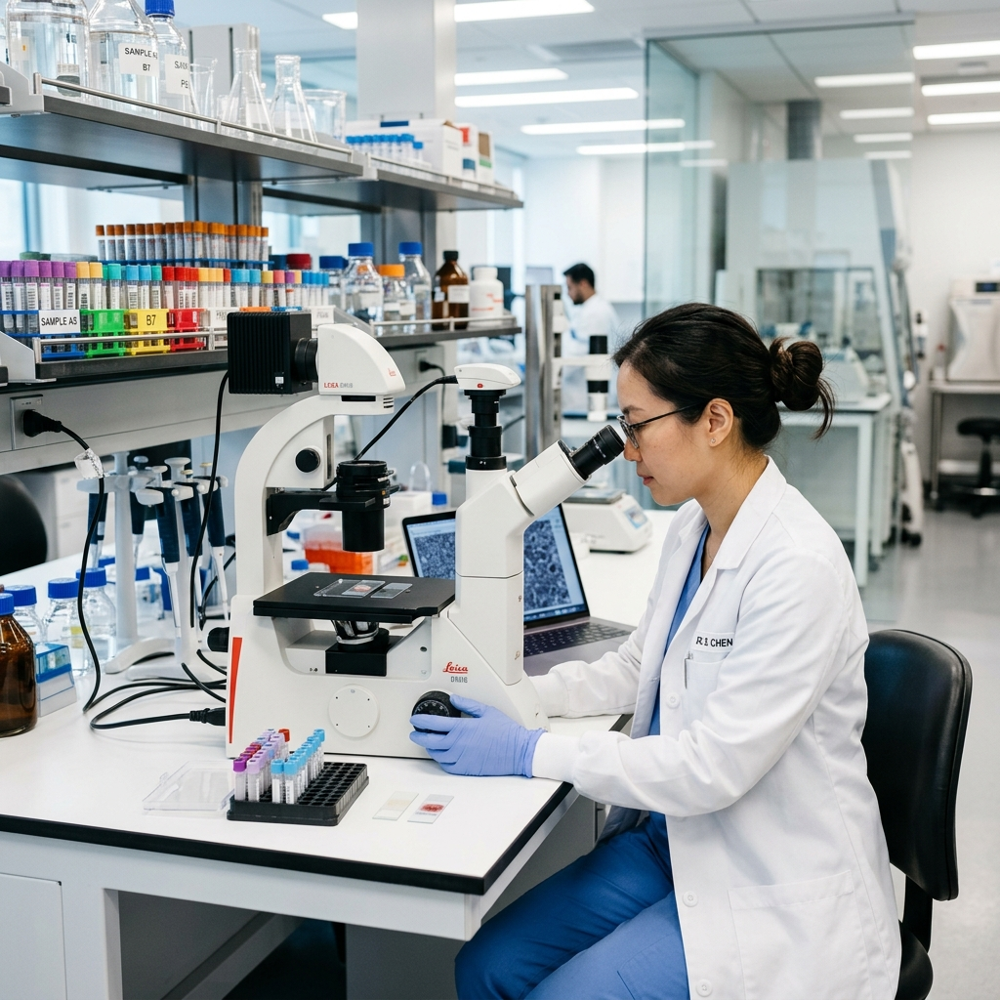
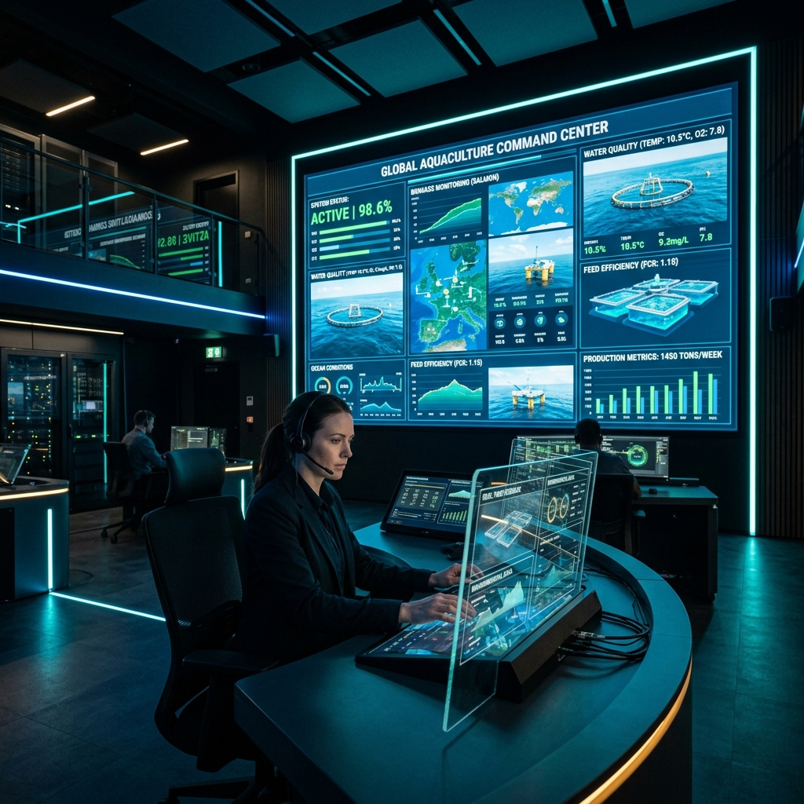
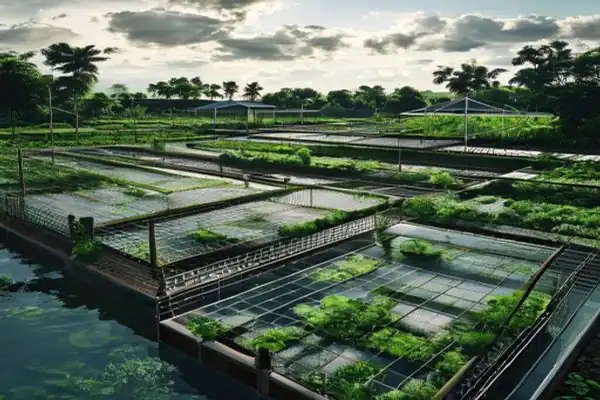

Industry News
July 10, 2026
5 Strategies to Optimize Feed Conversion Ratios (FCR)
Discover actionable tips on how implementing acoustic sensors and dynamic feeding schedules can drastically reduce feed waste and improve fish health.



Industry News
Tips
Success Stories
Research
Industry News
Research